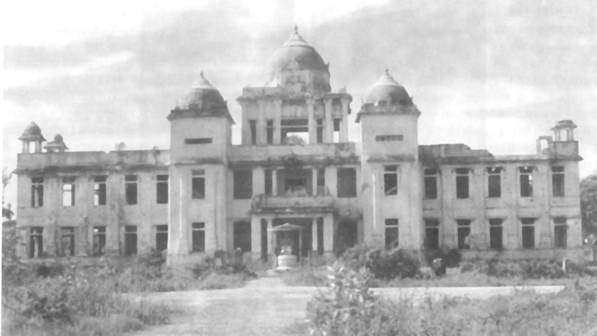

Editorial Comments · February 2003
Monumental History and the Politics of Memory: Public Space and the Jaffna Public Library
The Government of Sri Lanka named the 22nd of February as the National Peace Day – dedicated not only to the one year anniversary of the MOU, but also to commemorate all those who had lost their lives in the conflict - the memory of the dead officially commandeered to legitimize the terms of the current peace. How we ‘remember’ the dead is invariably about how we reclaim the future – about the struggle to control memory, shape its contours, to mobilize it in advancing particular agendas, and marginalize others. Orwellian official historical narratives are mobilized in celebratory monuments to rulers and battle heroes, days of commemoration to battles won and peace treaties signed, the issuing of stamps and the naming of roads, school children organized to march to the drumbeat of national ‘history’… the struggle over official memory however is also then a struggle over the stakes of war and peace, the debate over the cult of heroes and the appropriation of life even in death.
Is the history of the burning of Jaffna public library also at risk of being appropriated and pressed into servicing the agendas of the powerful?
The Jaffna public library was burned under state supervision in 1981 – the memory of that event burned into Tamil consciousness as an iconic marker of the physical and imaginative violence of state sponsored Sinhala majoritarianism. Today the rebuilding of the library is embroiled in a different kind of battle over memory and history; the scaffolding and reconstruction captured in the cover photograph by Dominic Sansoni represents how the memory of Tamil victimhood is itself under construction. Yet as Sansoni’s photograph suggests, the scaffolding gets assimilated into the clean lines and reconstructed façade of the rebuilt library (in fact at first glance I didn’t even notice the scaffolding), i.e., the construction of memory itself becomes naturalized into our narratives of the past. In that context, the controversy over the reopening of the library [1] reminds us that memory is itself a field of contestation: Who ‘owns’ the memory of 1981 in the Tamil community – “heroes” and rulers or their victims and survivors? The burning of the library is a story about the Sri Lankan government’s racist and violent campaign to conquer public space in Jaffna. Perhaps the debate over the re-opening of the public library constitutes a reclaiming of public space from the reach of the LTTE?
The burning of the library was an attack against public space in Jaffna not only in terms of an assault against bricks and mortar, not just the physical presence of the library and the books that it housed - it was much more …it was a symbolic assault on a community’s freedom to come together, exchange ideas, and collectively enrich a robust civil society. The events that followed that burning over the last two decades has seen that public space suffer blow after blow, not only by the continued ruthlessness of the Sri Lankan government, but in addition, by the actions and policies of the LTTE and others who wielded military power in the peninsula. There has been an assault on the community’s freedom to debate its present, hold its leaders accountable, confront the ghosts of its past and determine the direction of its future – all of this is part of what is connoted by the attack on public space in Jaffna. If the loss of this kind of public space suggests the enormity of what was lost in that historical burning of the library – rebuilding that public space, not just physically (as has already been done) but in the texture of day to day life in Jaffna, may be a valuable goal for the historical re-opening of the public library.
The broader canons of Tamil nationalism also often underscore the point that the burning of the Jaffna library was not only a material attack on the building, and the books and manuscripts stored in it – but with less emphasis on the loss of public space, they focus more on how that burning was also, and even more significantly, a symbolic attack against the value the Tamil community placed on learning. In this narrative, the core of the ‘loss’ experienced by Jaffna was that this was an attack against a culture of intellectual striving and a long tradition of academic achievement. In that context, there is frequent reference to the extraordinary resilience of a tradition of acadmic acheivement in Jaffna even during the war, where, like Sita surviving the test of fire, Jaffna’s secondary schools churned out spectacular A’ Level results even in war’s most heated moments to demonstrate a deeply entrenched fidelity to education. Yet this widespread claim that the Tamil community was characterized by its commitment to learning is itself suggestive of amnesia about the battles fought within the Tamil community to stifle intellectual exploration, deny access to education and inhibit learning. Thus even as everyone from C. W. Thamothrampillai to Prof. C. J. Eliezer, institutions from St. John’s College to Jaffna University, are invoked to underscore a history of Tamil academic achievement, we may also want to remember the underside of that history: the exclusion of those designated as lower castes from admission to the most celebrated secondary schools for many decades – and the bitter battles fought by significant sectors of the “Jaffna establishment” to keep the schools’ academic resources closed off to underprivileged castes; Or, to take an example from more recent times, the pressures against the education of Tamil women is represented in the hazing rituals imposed on first year women at Jaffna University. Moreover it is not only in the limiting of access to education that Tamil nationalist claims to prizing an intellectual culture are belied – it is also in the intolerance of dissident ideas, in the stifling of a critical culture of questioning by public intellectuals, that killed scholars like Rajani, poets like Chelvi, and indeed, many many others….
More inspiringly however, all these examples where there was a tradition of Tamils who fought to limit education and learning, are also the very examples where one can also track a counter-tradition of Tamils who fought for academic institutions that were inclusive, and a public intellectual culture that was critical and courageous. Sadly, the period after the burning of the library (because of that event but also a number of others) has also been a period where this latter Tamil tradition has been under attack – scorched by the history of repression and brutality unleashed by all the dominant actors, including the GOSL, the LTTE, the IPKF and many of the smaller Tamil militant groups. As noted earlier, our post-1981 history has been scalded not only by death and suffering, but also by the assault on public space.
In fact, situating it in a history of public space in Jaffna, the symbolism at stake in the burning of the public library may not have been a mythologized ancient culture of learning, but the public space for a culture of questioning and resistance. Libraries are here markers not of academic heroism, but of a space for ideas and questions, of public debate and contested histories.
Counterposed to monumental history, set alongside the burning of the Jaffna library, we may also want to remember another burning – the bonfire of poetry ignited by a Jaffna poet Sivaramani as prologue to her own suicide [2] . To me, the memory of Sivaramani’s poetry burning speaks to how nationalist histories of the past advanced by war’s henchmen (Sinhalese and Tamil) are accounts where victims and survivors are crowded out by heroes and rulers. Against the dominant history of Tamil culture as a culture of leaning, her poem, “A War Torn Night” [3] also reminds us of the dark battles against critical learning in the Tamil community:
“our children
grow
in the oppression
of a war torn night..
…
To not ask
To be silent
When questions remain
Unanswered,
They learn
To be mute,
To pluck the wings
Of dragon flies…”
The memory of the burning of Sivaramani’s poetry is then both a counter-history to the dominant narrative regarding what was at stake in the burning of the library, as well as an argument for the denizens of Jaffna to engage in the debate to re-open the library. The past is not merely the province of the LTTE and the city councilors – but also the space of civilians who have suffered the oppression of many ‘a war torn night’. Perhaps the debate over the public library may be the very moment when a robust civic dialogue may rise, phoenix like, to address contested visions of Jaffna’s past. Rather than pluck the wings of dragon flies to build monuments to history’s official story, we need to re-engage the past to reclaim our future…

[1] On the 13th of January Associated Press reported that “All 23 members of the town council in Tamil-dominated Jaffna resigned Thursday alleging they had been threatened by Tamil Tiger rebels seeking to postpone the reopening of a public library torched by anti-Tamil mobs nearly 22 years ago.” The resignation took place on Thursday the 13th of February, the library was scheduled to open on Friday the 14th of Febraury, but it has not re-opened yet and it is not clear when it will be opened.
[2] Sivaramani burnt her poetry and then took her life in 1990; the reasons for her tragic suicide are unclear but as her poetry suggests, this was a context of widespread despair and suffering in Jaffna.
[3] Translated by Chelva Kanaganayakam, See Lutesong and Lament 2002.